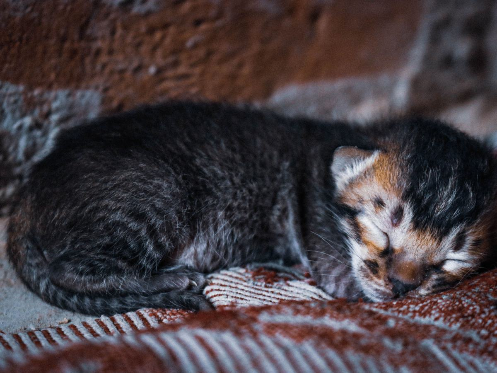
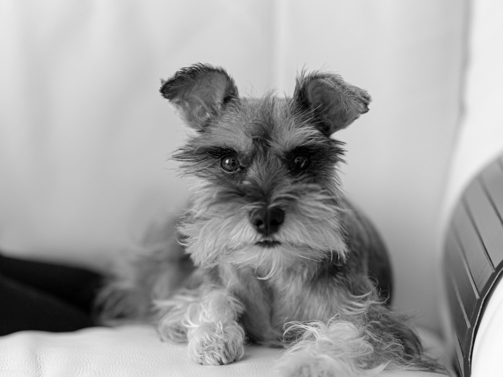
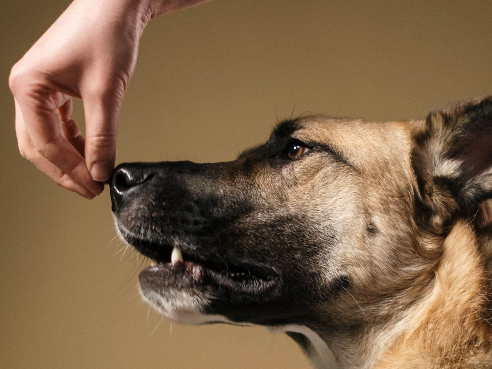
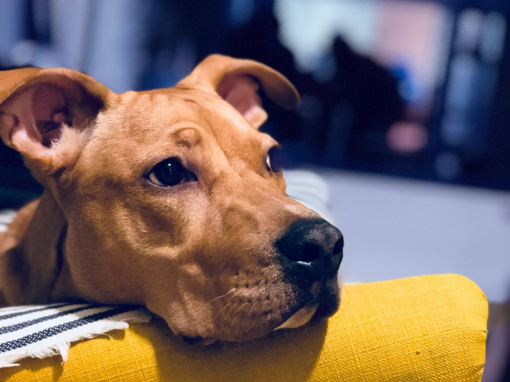
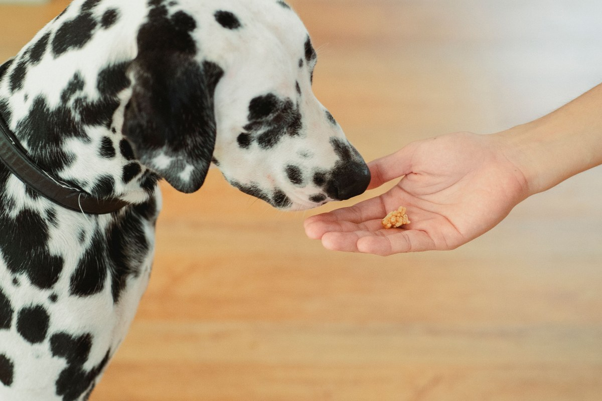
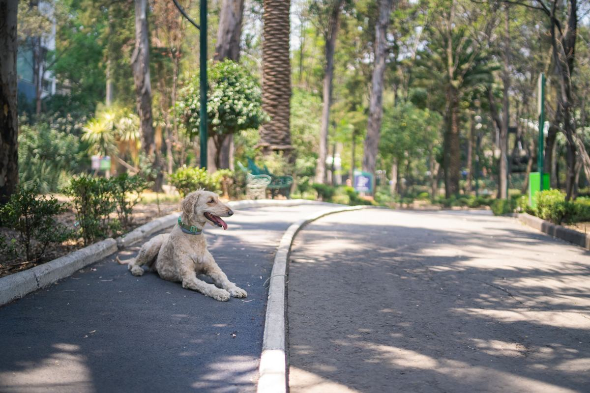
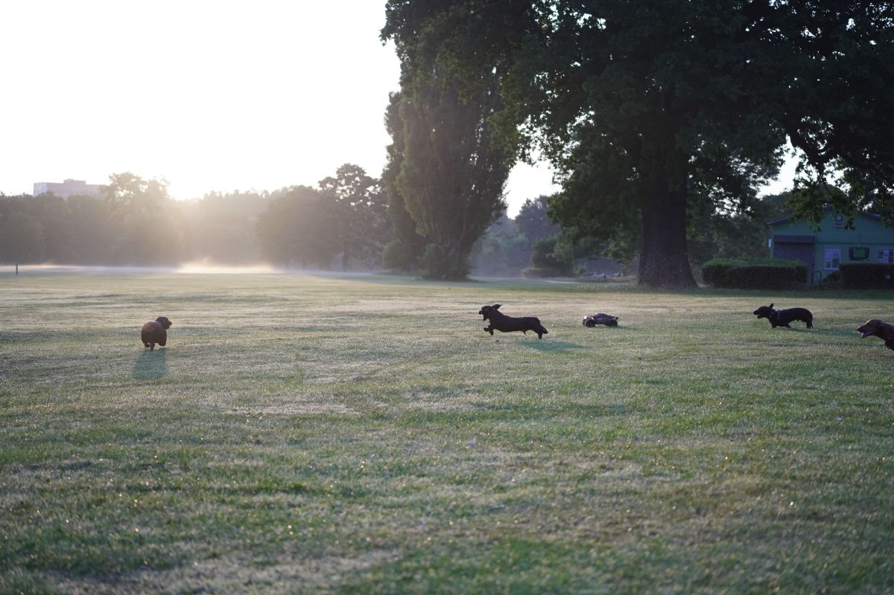

Puente Alto · Portezuelo de Los Azules 6866
El día de la vacuna, sin sorpresas.
Clínica Veterinaria Ciudad del Este: 275 reseñas y abierta hasta las 23 en la semana.
- 275reseñas en Google
- 23horas: cierra a esa hora de lunes a viernes
- 9reseñas hablan de urgencias
- 0webs: su ficha dice «Agregar sitio web»
El día de la vacuna
Qué pasa, y qué es normal después
- Antes
Que llegue tranquilo
- Un día normal, sin cambios raros.
- Trae su carnet.
- Durante
Unos minutos
- Se pesa y se revisa.
- Recibe la vacuna que toca según su carnet.
- Después
Un día de descanso
- Puede quedar decaído o dormir más.
- Al día siguiente, de vuelta a lo suyo.
Cuándo llamar
Si pasa más de un día decaído, se hincha la cara o le cuesta respirar. Atienden urgencias.
No reemplaza lo que diga el veterinario: el calendario de cada mascota está en su carnet.
Un pinchazo rápido, y a dormir la siesta.
Qué se atiende
Lo que más nombran sus reseñas
-
Urgencias
A cualquier hora del horario
Nueve reseñas las nombran.
-

Hospitalización
Cuando hay que quedarse
Otras nueve la mencionan.
-

Exámenes
Para decidir
Seis reseñas hablan de ellos.
-

Vacunas
Con su carnet
La visita más común del año.
-

Controles
Perros y gatos
Todas las mascotas de la casa.
-
De noche
Hasta las 23
De lunes a viernes.
Urgencias, hospitalización y exámenes salen en sus reseñas; vacunas y controles los confirma la clínica.
«No importa el día o la hora, siempre nos ayudan».
Una reseña de Google
Después de la visita
Siestas, premios y paseos



Fotos de referencia: ninguna es de la clínica.
Dónde está
Portezuelo de Los Azules 6866
- Teléfono
- (2) 2935 7750
- Lun a vie
- 8:00–23:00
- Sáb · dom
- 10:00–20:00
- Comuna
- Puente Alto
En la semana atiende hasta las once de la noche.
Portezuelo de Los Azules 6866 Abrir en Google Maps
Para Ciudad del Este
Qué es real y qué falta
Lo verificado
Dirección, teléfono, horario, reseñas y lo que dicen de urgencias y hospitalización, al 13-09-2026.
Lo de ejemplo
La guía del día de la vacuna, parte de los servicios y las fotos.
Lo que falta
Una web con agenda: en un sector con varias veterinarias, su ficha dice «Agregar sitio web».